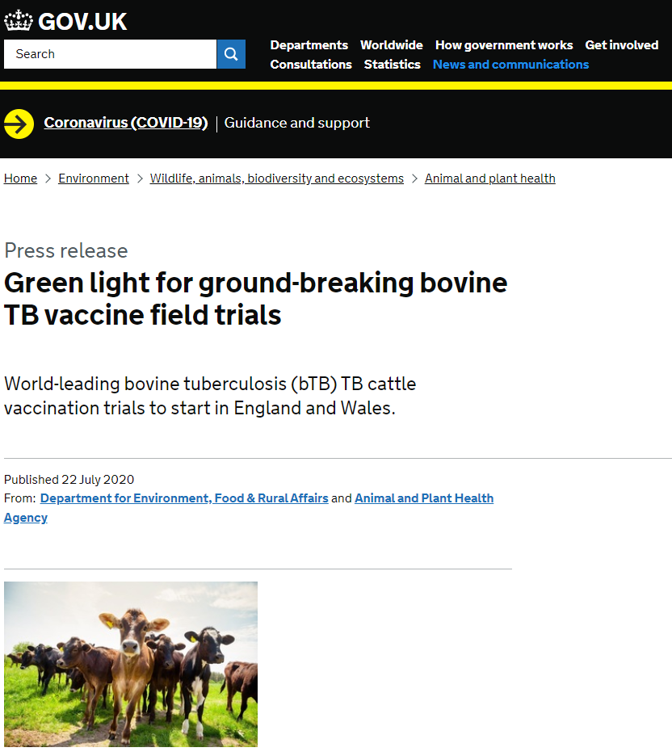
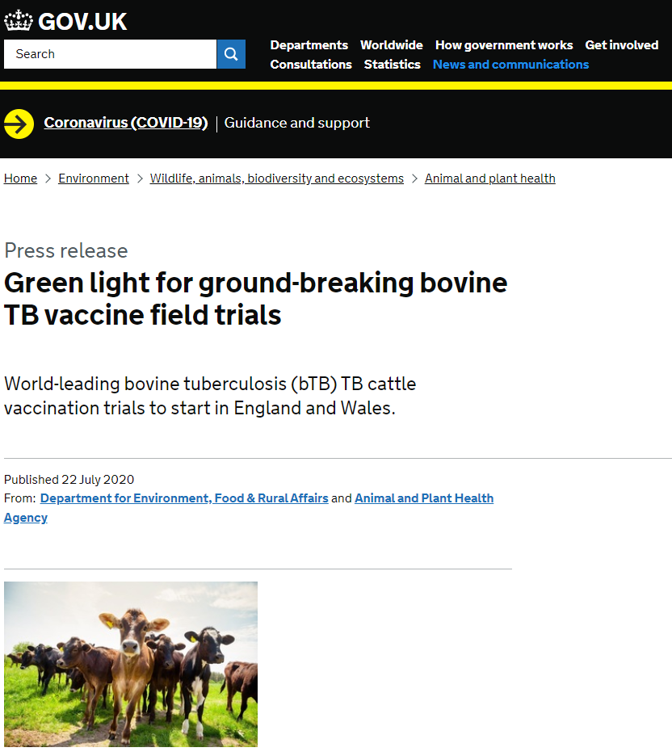

Data ethics in practice
Created by Joseph Crispell using the reveal.js framework
My Career
- Zoology
- Pathogen transmission
- Pathogen genomics
- Foreign, Commonwealth and Development Office
What is data ethics?
a branch of ethics that evaluates data practices with the potential to adversely impact on people and society — in data collection, sharing and use.
Improving Cancer mutation panels

| Result \ Truth | Positive | Negative |
|---|---|---|
| Positive | True positive | False positive |
| Negative | False negative | True negative |
Cattle, possums, and bTB in New Zealand

Lessons learnt
- Understand your sampling
- Where possible, design sampling strategy for research question
- Expect errors
Cattle, badgers, and bTB in Woodchester Park

 

Lessons learnt
- Be objective
- Understand representativeness
- Expect errors
Mapping HIV in Côte d'Ivoire
Reproducible data science
Be transparent
Be open
Be more than reproducible